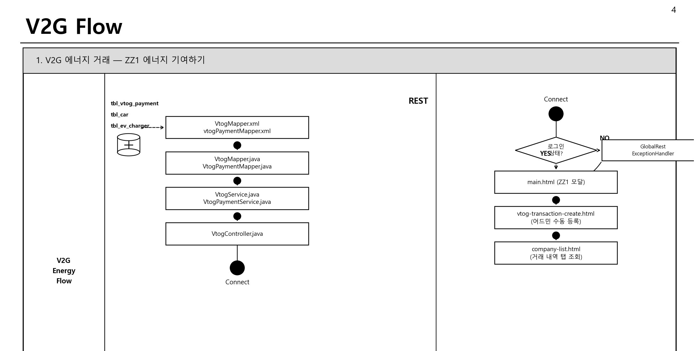

회원·인증
- 회원가입·로그인·세션 처리
- 카카오 OAuth 로그인
- 프로필과 회원 정보 관리
전기차 충전과 V2G/P2P 에너지 거래 도메인을 주제로 Spring MVC와 MyBatis 기반 웹 서비스의 기본기를 학습한 팀 프로젝트입니다.

팀 프로젝트의 회원·충전소·거래·게시판 기능 구현 과정에 참여했습니다. 전체 시스템을 단독 개발한 것으로 표현하지 않고, Spring/MyBatis 기반 CRUD와 인증·파일·검색 기능을 학습한 프로젝트로 정리했습니다.
게시판 CRUD를 처음 연결할 때는 요청 처리와 SQL을 가까이 두는 편이 빠르게 느껴졌습니다. 하지만 검색, 페이징, 파일 첨부가 붙으면서 한 기능을 고칠 때 다른 부분까지 같이 확인해야 했습니다. 이후부터는 다음 기준으로 나눠 작업했습니다.
URL과 폼 값을 받고 성공 또는 오류 화면을 정했습니다. DB 조회나 중복 검사 코드는 넣지 않았습니다.
등록, 수정, 조회마다 필요한 값이 달라 별도 전달 객체로 묶었습니다. 메서드 인자가 계속 늘어나는 문제도 줄일 수 있었습니다.
작성자 확인, 중복 검사, 등록과 파일 저장처럼 순서가 필요한 코드를 모았습니다. Controller가 달라도 같은 규칙을 다시 사용할 수 있었습니다.
DAO에는 무엇을 조회할지, Mapper에는 어떤 SQL로 조회할지를 두었습니다. 쿼리를 수정할 때 화면 코드를 함께 고치지 않아도 됐습니다.
REQUEST FLOW · Browser → Controller → DTO → Service → DAO → MyBatis Mapper → MySQL → View